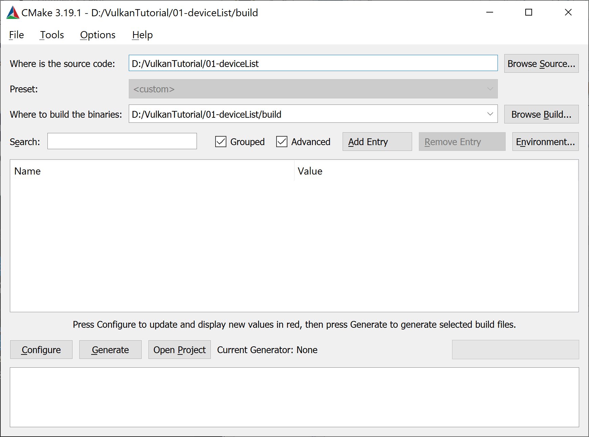
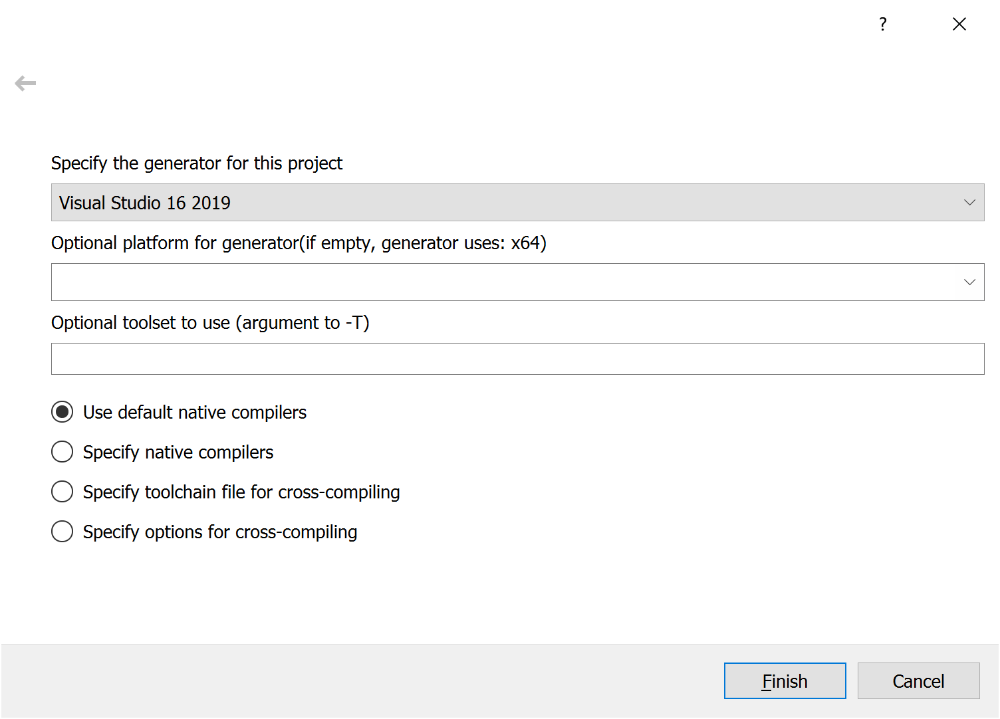
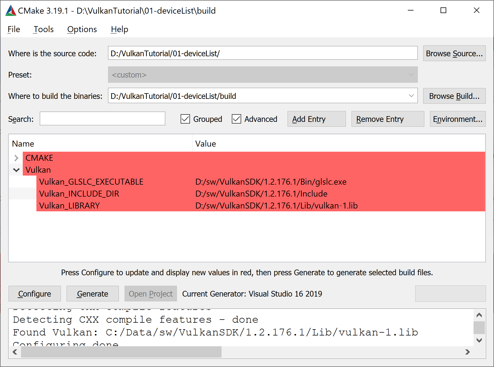
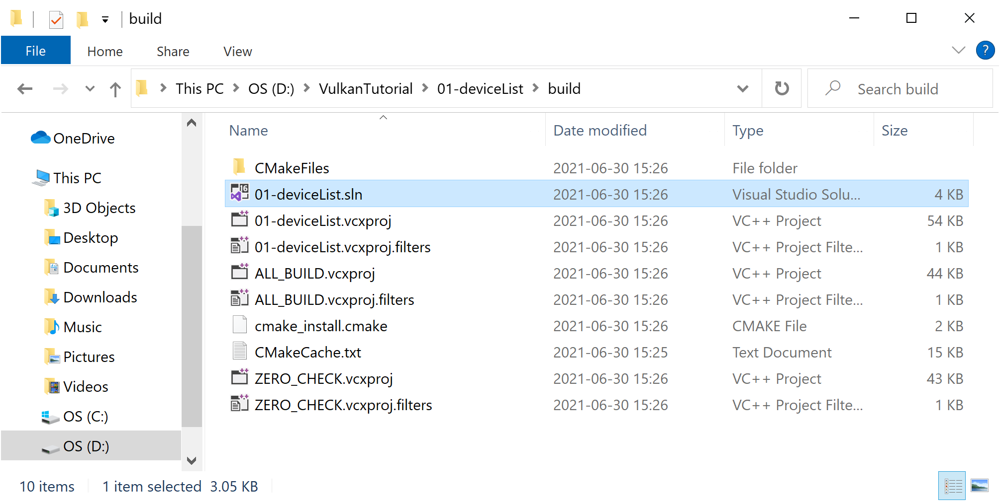
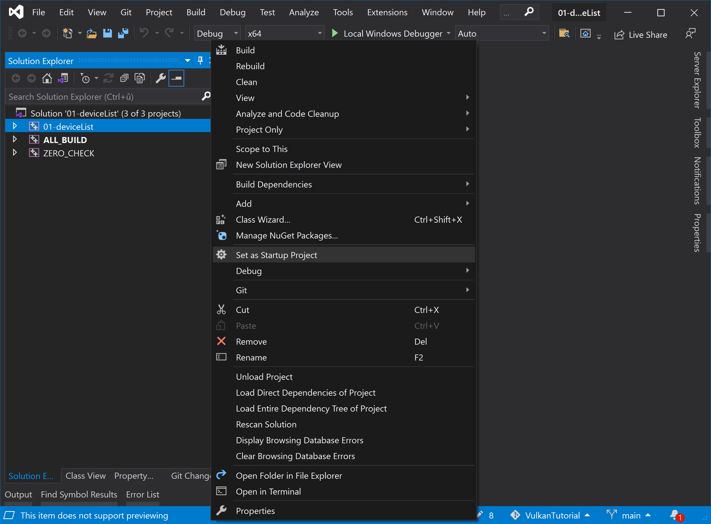
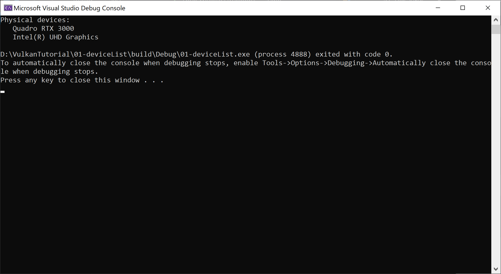

V tomto díle seriálu si ukážeme, jak nainstalovat vývojové prostředí a jak zkompilovat a spustit první vulkanní aplikaci.
Pro kompilaci a ladění budeme používat množství nástrojů a knihoven. Na Windows budeme používat Visual C++ 2017 či novější. Na Linuxu budeme používat g++, nicméně by měl fungovat jakýkoliv standardní C++ kompilátor. Mimo kompilátor budeme potřebovat ještě CMake a vývojové prostředí pro Vulkan ve formě vývojových balíčků, či přímo Vulkan SDK. CMake doporučuji verzi 3.10.2 či novější, alespoň tak radí stránky Vulkan SDK. Budu předpokládat, že čtenář je zkušený programátor a má c++ vývojové prostředí nainstalované a plně funkční. Na Linuxu je to nejčastěji balík build-essential (na Ubuntu) a na Windows zmíněné Visual C++ 2017 či novější. Rovněž budu předpokládat, že instalace CMake čtenáři není cizí. Na Linuxu jsou to balíčky cmake, cmake-curses-gui (Ubuntu) a případně nějaký balíček pro okenní GUI front-end. Já však budu používat pouze ccmake z balíku cmake-curses-gui pro gui v konzoli. Na Windows stáhneme CMake z jeho domácích stránek. Pro další informace odkazuji na internet.
Máme-li funkční vývojové prostředí a nainstalovaný CMake, zbývá nainstalovat věci specifické pro vývoj Vulkan aplikací. Na Linuxu máme více možností, proto si jej nechme na později a nejprve se podívejme na Windows.
Na Windows budeme používat Vulkan SDK. Ten je k dispozici na stránkách LunarG. Tam se proklikáme na stránku SDK a stáhneme nejnovější verzi pro Windows. A co že je to LunarG? LunarG a Khronos jsou velmi úzce spolupracující entity. Alespoň tak bych zkráceně přebásnil, co sami píšou na svých stránkách. Nemusíme tedy mít strach, že stahujeme něco, co není pod křídly Khronosu.
Instalace na Windows není složitá - spustíme stažený instalátor a proklikáme se instalátorem až do konce. Nejvíce nás asi vyruší otázka, kam chceme SDK nainstalovat. Nechám na osobních zvycích každého. Na závěr ani nemusíme restartovat počítač. Pokud jsme ale měli spuštěné Visual C++ nebo CMake, doporučuji je zavřít a znovu spustit. Instalátor totiž nastavil proměnnou prostředí VULKAN_SDK a všechny nově spuštěné aplikace nyní budou vědět, kde Vulkan SDK hledat. Již běžící aplikace ale o této nové proměnné nic netuší a budou se tvářit, jako by žádné SDK nainstalované nebylo. Proto tedy tento restart CMake a Visual C++.
Instalace na Linuxu je trochu zajímavější. Nabízejí se tři "populární" možnosti, jak zprovoznit Vulkan. Můžeme nainstalovat buď:
První možnost nám dá pravděpodobně omezenější prostředí, ve kterém mohou chybět některé pokročilejší nástroje, ale které pravděpodobně bude plně postačující pro tento tutoriál. Druhá možnost nám přinese kompletní set nástrojů a to ještě v jejich nejnovější verzi. Třetí možnost je pouze pro ty, kteří vědí, co chtějí, a také vědí, jak toho dosáhnout. A protože vědí, jak toho dosáhnout, nechme to na nich a pojďme se podívat na první dvě možnosti.
Předně bych upozornil - svět se mění a pár let po vydání tohoto článku mohou být procedury trochu jiné. Odkazuji na internet a vlastní důvtip.
Pro zmonitorování situace můžeme namátkou zkontrolovat, zda není Vulkan SDK mezi balíčkama, které daná distribuce standardně poskytuje. Případně jaké balíčky distribuce pro vývoj Vulkan aplikací poskytuje. Na ubuntu distribucích můžeme očekávat balíčky názvů libvulkan-dev, libvulkan1 a vulkan-utils, či podobné. Pokud jsme ovšem na starší distribuci, nemusí být její balíčky příliš aktuální. Například Ubuntu 18.04 nese vulkanní balíčky verze 1.1.70, tedy z března 2018, které s našim tutoriálem nebudou spolupracovat. Minimální verze je 1.1.73, alespoň pro první příklady našeho tutoriálu. Pozdější díly ale mohou vyžadovat již novější verzi Vulkan API. A nyní stojíme před rozhodnutím: Plnohodnotné Vulkan SDK nebo balíčky dané distribuce?
Pokud zvolíme Vulkan SDK, následujme instrukce ze stránek LunarG pro stažení Vulkan SDK pro Linux. Ty momentálně žádají tři kroky: přidání balíčkového repozitáře, aktualizaci seznamu balíčků a instalaci Vulkan SDK. Každá verze Vulkan SDK má trochu odlišné parametry příkazů. Takto vypadají pro Ubuntu 20.04 a Vulkan verze 1.2.176:
wget -qO - https://packages.lunarg.com/lunarg-signing-key-pub.asc | sudo apt-key add - sudo wget -qO /etc/apt/sources.list.d/lunarg-vulkan-1.2.176-focal.list https://packages.lunarg.com/vulkan/1.2.176/lunarg-vulkan-1.2.176-focal.list sudo apt update sudo apt install vulkan-sdk
Pro novější verzi Vulkan sledujte instrukce na stránce. Po instalaci je vše hotovo a můžeme začít Vulkan používat.
Pro ty, kteří chtějí minimální Vulkan vývojové prostředí, je zde volba balíčků distribuce, pokud je daná distribuce má. Na Ubuntu 18.04 a 21.04 jsou to libvulkan-dev, libvulkan1 a vulkan-tools či vulkan-utils. Tyto balíky přinášejí verzi Vulkanu 1.1.70 (tedy z března 2018 a pro nás příliš stará) a 1.2.162 (z prosince 2020). Nevýhody tohoto přístupu jsou často starší verze Vulkan a absence některých utilit, nástrojů a pomocných aplikací z Vulkan SDK. Výhodou je pak jednoduchost instalace.
Pro správně fungující Vulkan potřebujeme i odpovídající hardware a drivery. Vulkan je podporován Nvidií od generace Kepler, tedy GeForce 6xx (rok 2012). AMD ho podporuje od GCN, tedy od Radeon HD 7700-7900 (rok 2012). Intel od generace Skylake, řada i3-i7 6xxx (rok 2015). Avšak na Linuxu máme podporu již od Ivy Bridge (rok 2012), ač ne úplně kompletní, ale pro náš tutoriál snad postačující. Nově se pak na Linuxu objevil projekt Crocus, který by měl přinést Vulkan již od čtvrté generace Intel grafik, tedy od roku zhruba 2007.
Ohledně driverů, doporučuji nemít více jak rok staré ovladače. Podpora Vulkan totiž přichází s ovladačem. A máme-li funkční Vulkan, zjistíme například utilitou vulkaninfo. Tu spustíme na Linuxu v konzoli a na Windows ji najdeme v nabídce Start. Vulkaninfo je opravdu detailní a snaží se nám nezatajit sebemenší detail, proto je poněkud náročnější v něm najít názvy grafických karet, které ve vašem počítači podporují Vulkan. Kdo nainstaloval Vulkan SDK může využít vkconfig, tedy Vulkan Configurator, kde najde informace možná přehlednějším stylem. V novější verzi aplikace stačí zvolit v menu "Tools" -> "Vulkan Installation Analysis" a zvolit záložku Vulkan API calls. Zařízení najde mezi Physical Devices. Ve starším rozhranní pak vše najdeme v záložce "Vulkan Info" v položce "Device Properties and Extensions" -> GPU0 -> VkPhysicalDeviceProperties -> deviceName. Máme-li více karet, najdeme je pod GPU1, GPU2, atd.
A pokud máte podporovaný hardware a stále vám Vulkan nejede? Closed-source ovladače najdeme na stránkách Nvidie i AMD. Pro Linux máme volbu i open-source ovladačů, především pro AMD a Intel. Ty jsou součástí Mesa3D a na Ubuntu 18.04 je najdeme v balíčku mesa-vulkan-drivers. Pro další informace odkazuji na internet.
Kompilace na Linuxu by měla být jednoduchá. Stáhneme zdrojáky prvního tutoriálu a rozbalíme je do složky. Doporučuji nekompilovat přímo ve zdrojácích, ale vytvořit si například ve složce zdrojáků podsložku s názvem build. Kompilace pak může vypadat v nejjednodušším případě takto:
cd build cmake .. make ./01-deviceList
Pokud cmake úspěšně zkonfigurovalo celý projekt, následující příkaz make zkompiluje zdrojáky. Pokud se s cmake objeví nějaký problém, nebo pokud chceme zkontrolovat či zmodifikovat konfiguraci projektu, můžeme spustit ve složce build ccmake, které nám poskytne konzolové UI:
ccmake .
V ccmake klávesou c provedeme konfiguraci projektu. Pokud je vše ok, klávesou g vygenerujeme makefiles. Jinak můžeme procházet seznam proměnných a klávesou enter modifikovat jejich obsah. Klávesou t přepínáme viditelnost pokročilých voleb. Po editaci proměnných, závěrečné konfiguraci a vygenerování makefiles klávesou q ukončíme ccmake.
Pokud se nám stalo, že cmake nemohlo najít Vulkan, může nastavit proměnnou prostředí VULKAN_SDK a znova spustit cmake, nebo v ccmake nastavit proměnné Vulkan_LIBRARY a Vulkan_INCLUDE_DIR manuálně.
Po úspěšné konfiguraci příkazem make v konzoli zkompilujeme zdrojáky a můžeme se pokusit spustit výslednou aplikaci. Měli bychom být odměněni výpisem Vulkan zařízení přítomných v systému. Například:
Physical devices: Quadro K1000M
Pokud jej vidíte, gratuluji a máme otevřenu cestu k dalším dílům tutoriálu.
Na Windows, stejně jako na Linuxu, nejprve stáhneme zdrojáky a rozbalíme je do složky. Pak spustíme cmake-gui.exe. Najdeme jej buď v nabídce Start nebo ve složce, kam jsme CMake nainstalovali v podsložce bin. Spuštěný CMake vypadá takto:
Nastavíme cestu ke zdrojákům a cestu do složky, kde bude prováděn build. Následně klikneme na tlačítko konfigurovat. Objeví se dialog, kde nastavíme hlavní parametry projektu:
Především vybereme generátor pro vaši verzi Visual Studia. Pokud tam chybí vaše nejnovější verze Visual Studia, zkuste aktualizovat CMake. Pod výběrem generátoru je i výběr platformy. Výběr platformy se může hodit například, pokud bychom si přáli 32-bit build nebo chtěli kompilovat pro ARM. Na závěr klikneme na Finish. Projekt se nyní zkonfiguruje a měli bychom vidět následující okno CMake:
Pokud vybereme zaškrtávátko Advanced, měli bychom vidět i cesty k Vulkanu, jak Vulkan_INCLUDE_DIR tak Vulkan_LIBRARY. Pokud je nějaká cesta nastavena špatně, nastavíme ji manuálně. Znova provedeme Configure a pokud je vše ok, klikneme na Generate. Ve složce build by se nyní měl objevit soubor 01-deviceList.sln:
Poklepáním na něj se otevře Visual Studio. Klikneme pravým na 01-deviceList projekt a vybereme "Set as StartUp Project" a od této chvíle můžeme kompilovat a spouštět aplikaci.
Po úspěšném spuštění můžeme vidět obrázek podobný tomuto:
Jak vidíme, na tomto počítači jsou přítomny dvě grafické karty. Jedná se o notebook s kartou od Nvidie z řady Quadro a dále je přítomna integrovaná grafika od Intelu. Zajímavostí je, že na rozdíl od OpenGL, Vulkan aplikace si může vybrat, kterou kartu použije. V OpenGL jsme podobnou volbu neměli, nebo přesněji řečeno, tuto volbu dělal uživatel v nastavení grafického ovladače nebo program sám použitím relativně komplikovaných přístupů.
Pokud se vám podařilo aplikaci rozjet, tak jsme byli dnes úspěšní. Příště si ukážeme práci s fyzickými zařízeními a vysvětlíme základní strukturu Vulkan architektury.